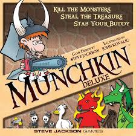

My name is Hunter Mahoney. Currently, I am a computer science undergraduate at Winona State University. I became interested in computer science after taking a web design class at Rochester Technical and Community College. From then on, I decided to focus on furthering my education within the field. Throughout school, I have learned a variety of different languages, with Java being my primary focus. I am also familiar with Python, Swift, C++, and C#. On top of those languages, I have also studied Html, CSS, and JavaScript.
My name is Hunter Mahoney. Currently, I am a computer science undergraduate at Winona State University. I became interested in computer science after taking a web design class at Rochester Technical and Community College. From then on, I decided to focus on furthering my education within the field. Throughout school, I have learned a variety of different languages, with Java being my primary focus. I am also familiar with Python, Swift, C++, and C#. On top of those languages, I have also studied Html, CSS, and JavaScript.
 During school, I conducted many projects that revolved around the Java language. One of these projects was included within my data structures class. My group and I decided to take on a project that was similar to the board game called Risk. Much like Risk, the game was all about controlling as many territories as possible. Users would have the ability to move and fortify armies that would be used for defense and attacks within the game. Creating this game was a complex program and taught me a lot in the long run.
During school, I conducted many projects that revolved around the Java language. One of these projects was included within my data structures class. My group and I decided to take on a project that was similar to the board game called Risk. Much like Risk, the game was all about controlling as many territories as possible. Users would have the ability to move and fortify armies that would be used for defense and attacks within the game. Creating this game was a complex program and taught me a lot in the long run.
 For a software engineering class, I created another project that was similar to a game called Munchkin™. This project was incredibly complex and took nearly a semester for myself and my other group members to fully complete. Using the agile method of programming, we created a working Munchkin™ lite version of the game. Though the game itself was far from perfect, it taught us the importance of proper communication and coordination in software development